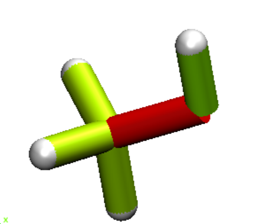

Reading and interpreting the output
The shown output of the JEDI Analysis of the example files provided in the Github folder. To do the test calculation, please take a closer look into the Examples Section.
Raw output
..code-block:
Preparing the JEDI analysis...
Starting jedi_rims.py to calculate redundant internal modes from cartesian coordinates.
Starting jedi_kill_atoms.py to check if atoms specified, that should be ignored in JEDI-Calculation.
INFO: No user input in jedi_kill_atoms_input.txt, so no atoms are ignored in JEDI-Calculation.
Starting b_mat.py to calculate the B-Matrix.
Starting delta_q.py to calculate q0, qF and delta_q.
************************************************
* JEDI ANALYSIS *
* Judgement of Energy DIstribution *
************************************************
Strain Energy (h) Deviation (%)
Geometries 0.01464175 -
Red. Int. Modes 0.01274058 -12.98
RIM No. RIM type delta_q (a.u.) Percentage Energy (h)
1 BL 2 1 -0.1094527 16.0 0.0020347
2 BL 3 1 -0.1095745 15.9 0.0020255
3 BL 4 1 -0.1043128 15.0 0.0019052
4 BL 5 1 -0.1761543 41.5 0.0052871
5 BL 6 5 -0.0814846 12.1 0.0015433
6 BA 2 1 3 -0.0193343 -0.0 -0.0000037
7 BA 2 1 4 -0.0277224 0.0 0.0000062
8 BA 2 1 5 0.0172497 -0.0 -0.0000045
9 BA 3 1 4 -0.0246658 -0.0 -0.0000023
10 BA 3 1 5 0.0161736 -0.0 -0.0000032
11 BA 4 1 5 0.0323722 0.1 0.0000133
12 BA 1 5 6 0.0375386 -0.5 -0.0000645
13 DA 6 5 1 2 0.0218233 0.0 0.0000012
14 DA 6 5 1 3 0.0205283 0.0 0.0000034
15 DA 6 5 1 4 0.0100497 -0.0 -0.0000010
Creating tcl scripts for generating color-coded structures in VMD...
Processing bond lengths...
Maximum energy in a bond length: 41.50%
Total energy in the bond lengths: 100.43
Processing bond angles...
Maximum energy in a bond angle: 0.10%
Total energy in the bond angles: -0.46
Processing dihedral angles...
Maximum energy in a dihedral angle: 0.03%
Total energy in the dihedral angles: 0.03
JEDI terminated successfully.
"You don't have to do this to impress me." (Princess Leia)
The raw output shows both the strain energies of the ab initio calculations and the JEDI Analysis. The deviation can be interpreted as error of the harmonic approximation. This print out is followed by the geometric change and the percentages of the strain in each redundant internal mode. Lastly, the isolated strains are added up in each class of redundant internal modes (bond lengths, bond angles and torsion angles).
VMD Analysis
To visualize the strain distribution an output is generated, that is readable in a VMD Analysis. The VMD Analysis is a tool that can be used to color code the bonds. JEDI uses a user defined Python routine, that calculates the strain in each bond and color codes it according to the strain. For this purpose, tcl scripts for use in VMD will be generated automatically (“vmd_bl.tcl” for the bond lengths, “vmd_ba.tcl” for the bond angles, “vmd_da.tcl” for the dihedral angles and “vmd_all.tcl” for the total distribution).
In the given example a VMD Output of all strain contributions in all modes would look something like this:
{kind=link}
The dark red O-C-bond indicates the highest strain in this molecule area. A similar VMD readable output is generated for the indivual modes (bond lengths, angles and torsions).